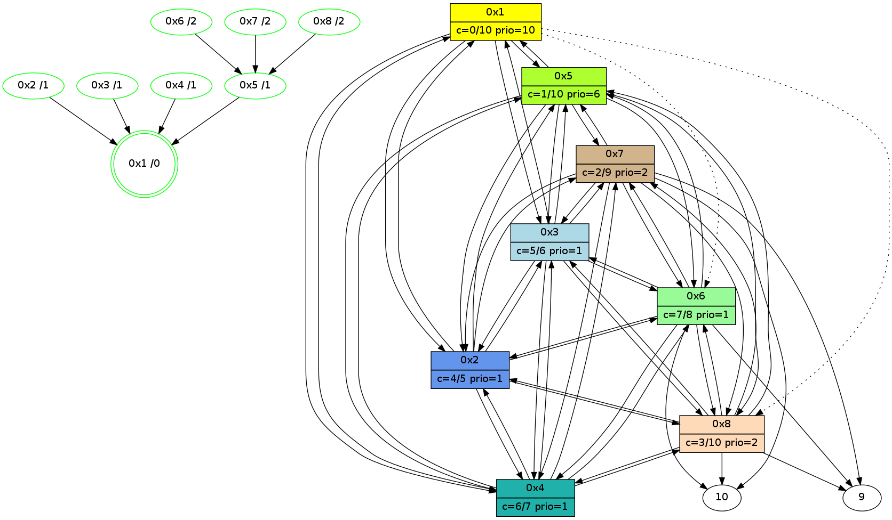

>> << IDX [start] -100 -25 -5 +0 +5 +25 [470.076972008]
 Previous packets
----------------------------------------------------------------------
465.643458 beacon01(11f6) #0 coord=01,02,03,04,05,06,07,08,0a,09 cycle=1008.0ms assoc
-- color-indic=0 64 9a 28
465.653626 beacon02(11f6) #0 coord=01,02,03,04,05,06,07,08,0a,09 cycle=1008.0ms assoc 64 09 19
465.663593 beacon03(11f6) #0 coord=01,02,03,04,05,06,07,08,0a,09 cycle=1008.0ms assoc 64 73 54
465.673592 beacon04(11f6) #0 coord=01,02,03,04,05,06,07,08,0a,09 cycle=1008.0ms assoc 64 04 be
465.683593 beacon05(11f6) #0 coord=01,02,03,04,05,06,07,08,0a,09 cycle=1008.0ms assoc 64 7e f3
465.693594 beacon06(11f6) #0 coord=01,02,03,04,05,06,07,08,0a,09 cycle=1008.0ms assoc 64 f0 24
465.703594 beacon07(11f6) #0 coord=01,02,03,04,05,06,07,08,0a,09 cycle=1008.0ms assoc 64 8a 69
465.713598 beacon08(11f6) #0 coord=01,02,03,04,05,06,07,08,0a,09 cycle=1008.0ms assoc 64 0f f8
465.752807 [Hello(6): seq=234 sym=10,7,5,3,8,4,2,9 color=7 sysInfo=hasWarning,MaxColorIndicationCalled,ColoringModeIndicationCalled,MaxColorResponseCalled stat=10:8,10,8,7/7:4,15,15,10/5:12,14,0,2/3:1,0,15,13/8:12,1,13,3/4:4,0,8,12/2:11,15,12,11/9:9,14,13,3]
465.777122 [Hello(8): seq=234 sym=2,7,5,6,3,4,10,9 color=3 sysInfo=MaxColorIndicationCalled,ColoringModeIndicationCalled,MaxColorResponseCalled stat=2:6,15,13,13/7:4,15,15,10/5:2,0,15,2/6:5,0,13,11/3:11,15,12,12/4:13,0,12,12/10:9,10,7,7/9:13,14,6,2]
465.795108 [Hello(7): seq=234 sym=10,5,6,8,3,2,4,9 color=2 sysInfo=hasWarning,MaxColorIndicationCalled,ColoringModeIndicationCalled,MaxColorResponseCalled stat=10:12,10,11,8/5:3,0,0,2/6:5,1,14,12/8:15,1,13,3/3:10,15,15,12/2:11,15,12,11/4:10,15,5,10/9:6,0,14,3]
465.845181 [Hello(2): seq=234 sym=1,7,5,3,8,4,6 color=4 sysInfo=hasWarning,MaxColorIndicationCalled,ColoringModeIndicationCalled,MaxColorResponseCalled stat=1:9,1,1,0/7:8,14,15,10/5:11,1,0,2/3:12,0,13,11/8:11,0,11,2/4:13,15,14,13/6:2,1,14,12]
465.849859 [Hello(4): seq=234 sym=1,2,5,6,3,8,7 color=6 sysInfo=MaxColorIndicationCalled,ColoringModeIndicationCalled,MaxColorResponseCalled stat=1:9,0,2,0/2:13,1,15,13/5:2,14,0,2/6:9,0,15,12/3:2,0,13,11/8:12,0,10,2/7:15,14,15,10]
465.861235 [Hello(3): seq=234 sym=1,2,7,5,6,8,4 color=5 sysInfo=hasWarning,MaxColorIndicationCalled,ColoringModeIndicationCalled,MaxColorResponseCalled stat=1:10,1,1,0/2:14,0,14,14/7:9,14,15,9/5:9,1,13,2/6:7,1,15,12/8:11,0,11,2/4:1,0,15,13]
465.895157 [Hello(5): seq=234 sym=1,2,7,6,3,8,4 color=1 sysInfo=hasWarning,MaxColorIndicationCalled,ColoringModeIndicationCalled,MaxColorResponseCalled stat=1:10,0,1,0/2:14,1,15,13/7:12,14,15,10/6:11,1,14,12/3:1,0,0,12/8:12,15,11,2/4:0,1,12,12]
----------------------------------------------------------------------
466.751835 beacon01(11f6) #0 coord=01,02,03,04,05,06,07,08,0a,09 cycle=1008.0ms assoc
-- color-indic=0 64 26 2d
466.762001 beacon02(11f6) #0 coord=01,02,03,04,05,06,07,08,0a,09 cycle=1008.0ms assoc 64 b5 1c
466.771970 beacon03(11f6) #0 coord=01,02,03,04,05,06,07,08,0a,09 cycle=1008.0ms assoc 64 cf 51
466.781970 beacon04(11f6) #0 coord=01,02,03,04,05,06,07,08,0a,09 cycle=1008.0ms assoc 64 b8 bb
466.791971 beacon05(11f6) #0 coord=01,02,03,04,05,06,07,08,0a,09 cycle=1008.0ms assoc 64 c2 f6
466.801971 beacon06(11f6) #0 coord=01,02,03,04,05,06,07,08,0a,09 cycle=1008.0ms assoc 64 4c 21
466.811971 beacon07(11f6) #0 coord=01,02,03,04,05,06,07,08,0a,09 cycle=1008.0ms assoc 64 36 6c
466.821975 beacon08(11f6) #0 coord=01,02,03,04,05,06,07,08,0a,09 cycle=1008.0ms assoc 64 b3 fd
466.905371 [Hello(1): seq=235 sym=5,3,2,4 asym=8,6 color=0/10 sysInfo=hasWarning,MaxColorIndicationCalled,MaxColorResponseCalled,MaxColorRequestCalled,ColoringModeRequestCalled stat=5:13,0,1,2/3:3,0,0,13/2:14,0,15,14/4:1,1,15,14/8:15,0,11,2/6:14,1,14,12]
----------------------------------------------------------------------
467.860214 beacon01(11f6) #0 coord=01,02,03,04,05,06,07,08,0a,09 cycle=1008.0ms assoc
-- color-indic=0 64 f2 18
467.870384 beacon02(11f6) #0 coord=01,02,03,04,05,06,07,08,0a,09 cycle=1008.0ms assoc 64 61 29
467.880351 beacon03(11f6) #0 coord=01,02,03,04,05,06,07,08,0a,09 cycle=1008.0ms assoc 64 1b 64
467.890349 beacon04(11f6) #0 coord=01,02,03,04,05,06,07,08,0a,09 cycle=1008.0ms assoc 64 6c 8e
467.900351 beacon05(11f6) #0 coord=01,02,03,04,05,06,07,08,0a,09 cycle=1008.0ms assoc 64 16 c3
467.910351 beacon06(11f6) #0 coord=01,02,03,04,05,06,07,08,0a,09 cycle=1008.0ms assoc 64 98 14
467.920351 beacon07(11f6) #0 coord=01,02,03,04,05,06,07,08,0a,09 cycle=1008.0ms assoc 64 e2 59
467.930355 beacon08(11f6) #0 coord=01,02,03,04,05,06,07,08,0a,09 cycle=1008.0ms assoc 64 67 c8
467.965583 [Hello(4): seq=235 sym=1,2,5,6,3,8,7 color=6 sysInfo=MaxColorIndicationCalled,ColoringModeIndicationCalled,MaxColorResponseCalled stat=1:10,0,2,0/2:14,1,15,13/5:3,14,0,2/6:9,0,15,12/3:3,0,13,11/8:12,0,10,2/7:15,14,15,10]
467.989840 [Hello(5): seq=235 sym=1,2,7,6,3,8,4 color=1 sysInfo=hasWarning,MaxColorIndicationCalled,ColoringModeIndicationCalled,MaxColorResponseCalled stat=1:11,0,1,0/2:14,1,15,13/7:12,14,15,10/6:11,1,14,12/3:1,0,0,12/8:12,15,11,2/4:1,1,12,12]
468.006954 [Hello(6): seq=235 sym=10,7,5,3,8,4,2,9 color=7 sysInfo=hasWarning,MaxColorIndicationCalled,ColoringModeIndicationCalled,MaxColorResponseCalled stat=10:9,10,8,7/7:5,15,15,10/5:14,14,0,2/3:2,0,15,13/8:13,1,13,3/4:6,0,8,12/2:11,15,12,11/9:11,14,13,3]
468.019284 [Hello(8): seq=235 sym=2,7,5,6,3,4,10,9 color=3 sysInfo=MaxColorIndicationCalled,ColoringModeIndicationCalled,MaxColorResponseCalled stat=2:6,15,13,13/7:5,15,15,10/5:4,0,15,2/6:6,0,13,11/3:12,15,12,12/4:15,0,12,12/10:10,10,7,7/9:15,14,6,2]
468.073557 [Hello(7): seq=235 sym=10,5,6,8,3,2,4,9 color=2 sysInfo=hasWarning,MaxColorIndicationCalled,ColoringModeIndicationCalled,MaxColorResponseCalled stat=10:13,10,11,8/5:5,0,0,2/6:6,1,14,12/8:0,1,13,3/3:10,15,15,12/2:11,15,12,11/4:12,15,5,10/9:8,0,14,3]
468.089213 [Hello(2): seq=235 sym=1,7,5,3,8,4,6 color=4 sysInfo=hasWarning,MaxColorIndicationCalled,ColoringModeIndicationCalled,MaxColorResponseCalled stat=1:10,1,1,0/7:9,14,15,10/5:13,1,0,2/3:13,0,13,11/8:12,0,11,2/4:15,15,14,13/6:3,1,14,12]
468.109909 [Hello(3): seq=235 sym=1,2,7,5,6,8,4 color=5 sysInfo=hasWarning,MaxColorIndicationCalled,ColoringModeIndicationCalled,MaxColorResponseCalled stat=1:11,1,1,0/2:15,0,14,14/7:10,14,15,9/5:11,1,13,2/6:8,1,15,12/8:12,0,11,2/4:2,0,15,13]
----------------------------------------------------------------------
468.968593 beacon01(11f6) #0 coord=01,02,03,04,05,06,07,08,0a,09 cycle=1008.0ms assoc
-- color-indic=0 64 4e 1d
468.978776 beacon02(11f6) #0 coord=01,02,03,04,05,06,07,08,0a,09 cycle=1008.0ms assoc 64 dd 2c
468.988728 beacon03(11f6) #0 coord=01,02,03,04,05,06,07,08,0a,09 cycle=1008.0ms assoc 64 a7 61
468.998728 beacon04(11f6) #0 coord=01,02,03,04,05,06,07,08,0a,09 cycle=1008.0ms assoc 64 d0 8b
469.008728 beacon05(11f6) #0 coord=01,02,03,04,05,06,07,08,0a,09 cycle=1008.0ms assoc 64 aa c6
469.018731 beacon06(11f6) #0 coord=01,02,03,04,05,06,07,08,0a,09 cycle=1008.0ms assoc 64 24 11
469.028730 beacon07(11f6) #0 coord=01,02,03,04,05,06,07,08,0a,09 cycle=1008.0ms assoc 64 5e 5c
469.038733 beacon08(11f6) #0 coord=01,02,03,04,05,06,07,08,0a,09 cycle=1008.0ms assoc 64 db cd
469.074993 [Hello(1): seq=236 sym=5,3,2,4 asym=8,6 color=0/10 sysInfo=hasWarning,MaxColorIndicationCalled,MaxColorResponseCalled,MaxColorRequestCalled,ColoringModeRequestCalled stat=5:14,0,1,2/3:4,0,0,13/2:15,0,15,14/4:2,1,15,14/8:0,0,11,2/6:15,1,14,12]
469.078143 [STC(1) #0.35 new-neigh,stable,to-color d=0]
469.112088 [STC(2)->1 #0.35 new-neigh,stable,to-color d=1]
469.131969 [STC(5)->1 #0.35 new-neigh,stable,to-color d=1]
469.137982 [STC(3)->1 #0.35 new-neigh,stable,to-color d=1]
469.179965 [STC(4)->1 #0.35 new-neigh,stable,to-color d=1]
469.187364 [STC(7)->5-.->1 #0.35 new-neigh,stable,to-color d=2]
469.197660 [STC(8)->5-.->1 #0.35 new-neigh,stable,to-color d=2]